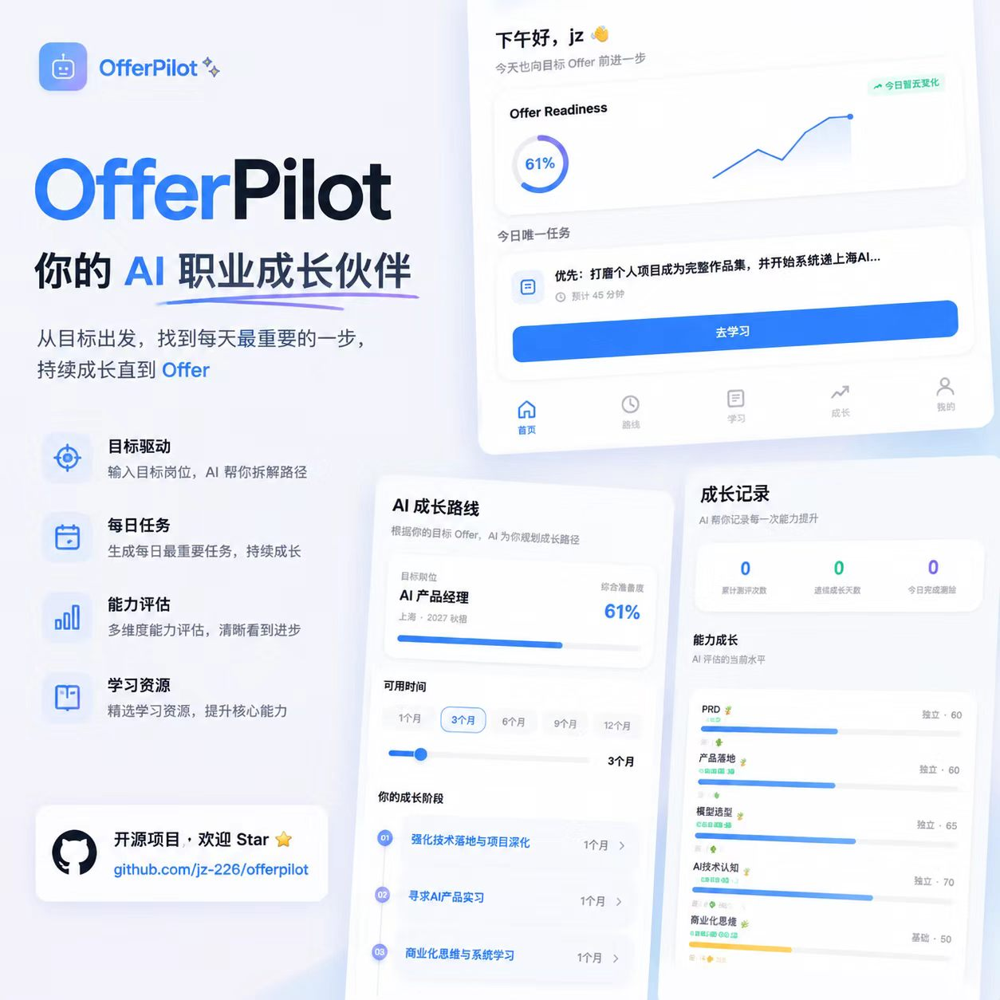
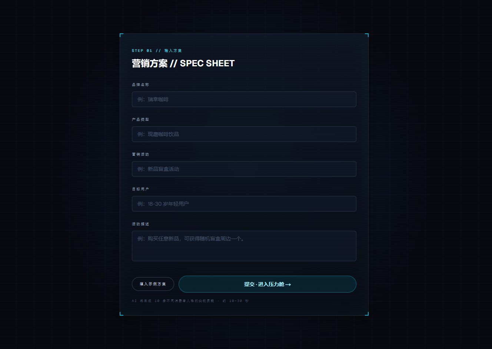
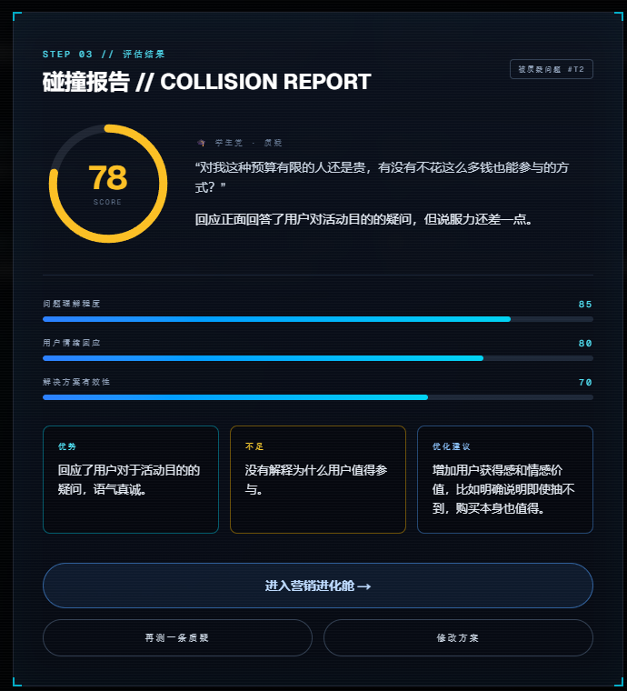
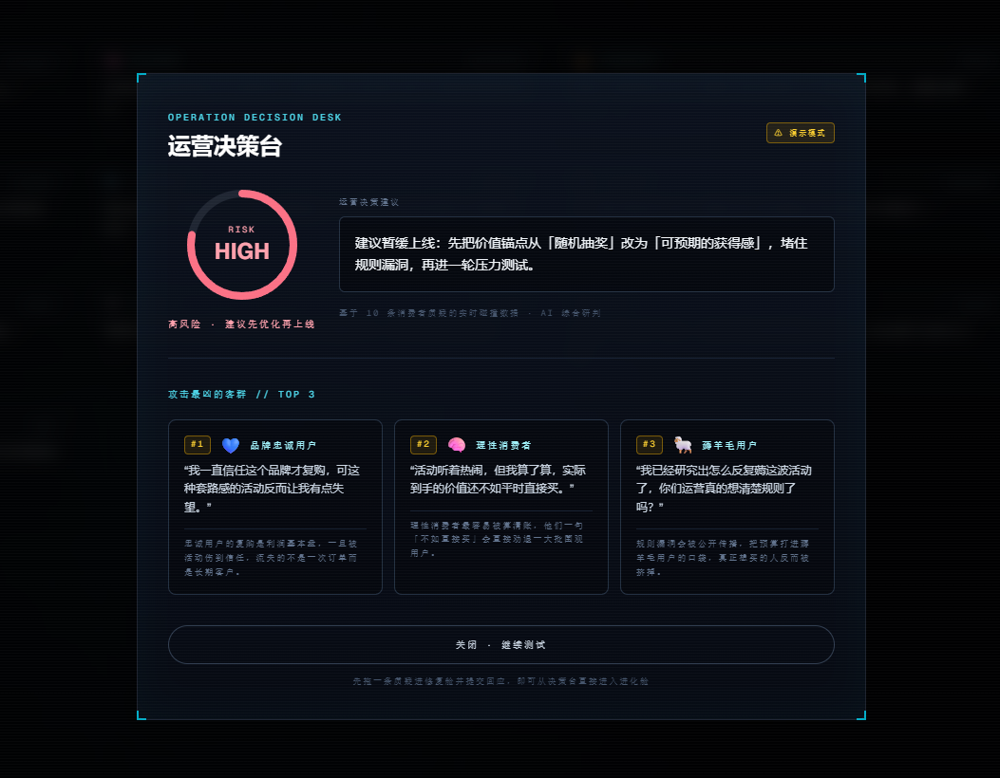
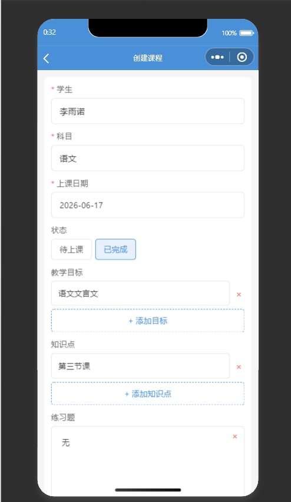
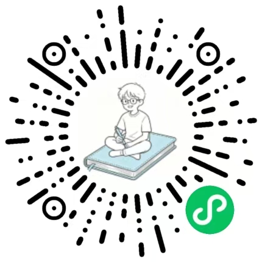
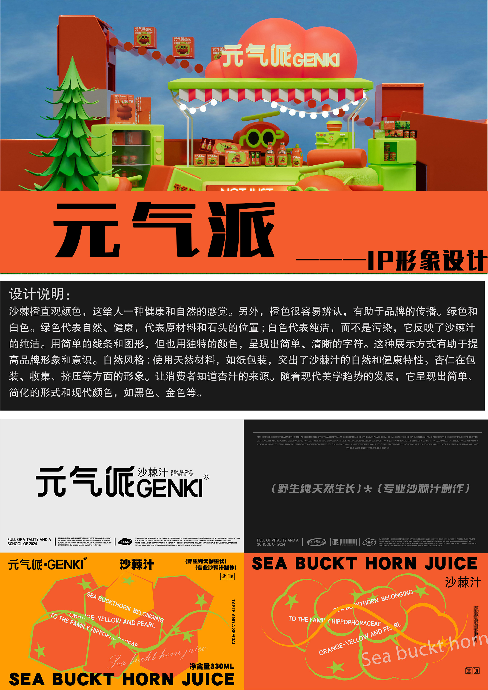
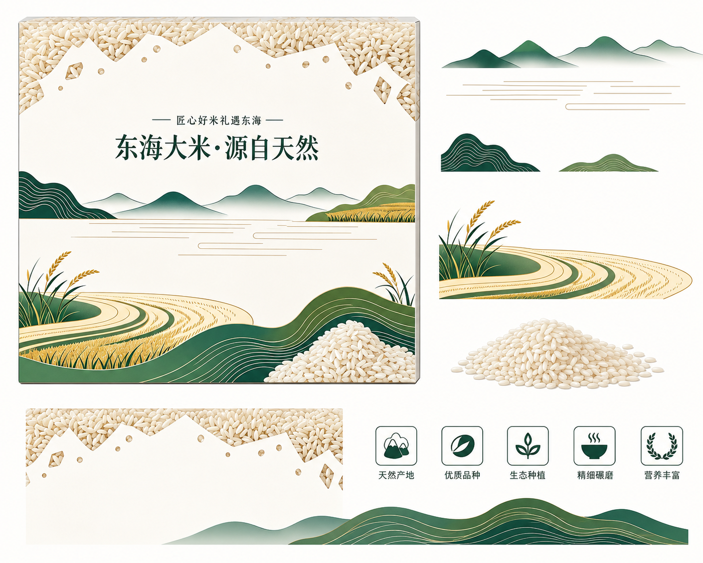
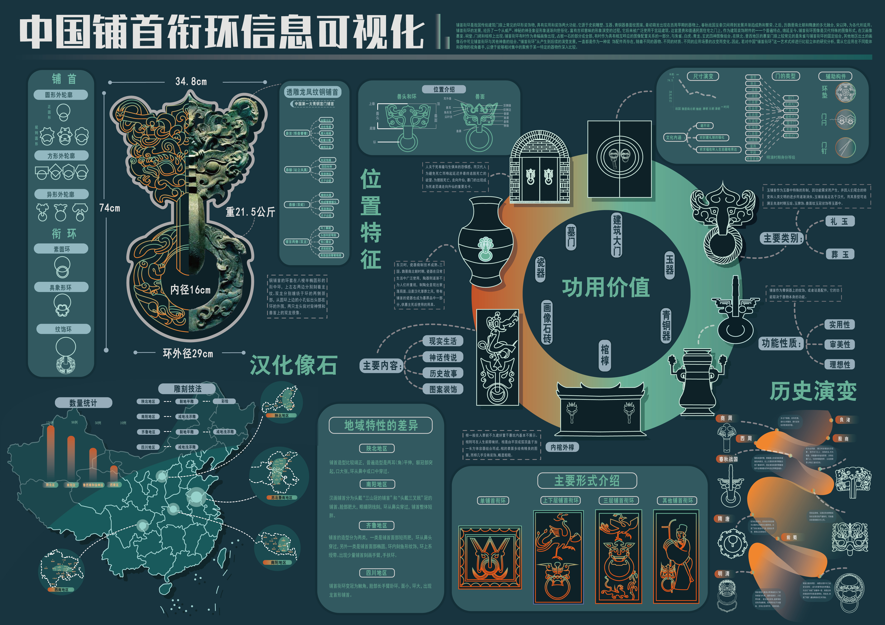

姜梓 / JIANG ZI
我把问题，
做成可以被使用的东西。
数字媒体艺术专业大三学生，专注 AI 产品、AI 运营和应用开发。喜欢从真实场景出发，把用户洞察、视觉系统、AI 工作流和前端实现接在一起。
THE WORK LOOP
OBSERVE · SHAPE · SHIP
OBSERVE · SHAPE · SHIP
NOW SELECTED观察真实问题从用户处境开始，而不是从一个漂亮界面开始。
01OfferPilotAI career growth agent
02Wind TunnelAI × operations
03姜记学情本shipped mini program
PRODUCT THINKING · AI WORKFLOW · FRONTEND BUILD · VISUAL SYSTEM · SHIPPED PRODUCTS ·
01 — SELECTED WORK
点击项目进入完整案例。每个案例都包含真实界面、交互演示和我的具体工作。
02 / AI OPERATIONS
Marketing
Wind Tunnel
让营销方案先被攻击一次
输入一个营销方案，十个 AI 消费者生成质疑；运营者拖拽、回应、修复，AI 评分后进入进化舱，最后输出“能不能上线”的风险报告。
角色创意 / 产品 / 前端 / Prompt技术Next.js · React · Framer Motion状态AI 开发者大赛 · AI+运营赛道







03 / SHIPPED MINI PROGRAM
姜记学情本
给家教老师的学生管理工具
学生档案、备课、错题、总结四个模块，围绕“待讲解 → 已讲解 → 已掌握”的状态流转，帮助老师把每一次课后的信息留下来。
角色独立产品 / 交互 / 开发技术原生微信小程序 · 本地存储状态已上线
扫码体验小程序
02 — ABOUT ME
不只做界面，
也把它交付出去。
我是姜梓，数字媒体艺术专业大三学生。我的优势不在于只会一种工具，而在于能从问题定义开始，完成产品结构、交互表达、AI 逻辑和可运行的前端实现。
AI 产品目标、流程、指标、迭代
AI 运营用户反馈、实验、决策
应用开发Next.js、React、小程序
03 — VISUAL EXPERIMENTS
品牌、3D、包装和信息可视化，是我建立视觉语言的另一条线。


